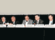
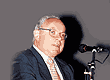
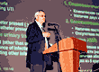
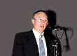
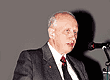
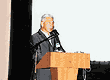
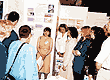
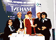
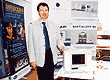

The International IACMAC/ISC Conference «Surgical infections: prevention and management» was held on 29-30 May 2003 in Moscow, Russia.
International IACMAC/ISC Conference
«Surgical infections: prevention and management»
The International IACMAC/ISC Conference «Surgical infections: prevention and management» was held on 29-30 May 2003 in Moscow, Russia. The Big concert hall of the hotel «Cosmos» was the conference venue. The conference was held in the framework of international project «Disease Management Series» proposed by ISC and was organized in Russia by IACMAC jointly with ISC. In Russia the conference was also supported by the Ministry Health of Russian Federation, Russian Academy of Medical Sciences, and All-Russian Scientific Medical Surgeons Society.
Participants

Surgeons and specialists in the surgical infections have shown great interest to the conference. Over 1450 specialists from 170 Russian cities and various foreign countries - Byelorussia, Moldavia, Ukraine, Kazakhstan, Kirghizia, Uzbekistan, and also Austria, Bulgaria, Germany, Israel, Poland, Serbia, and Korea took part in the scientific sessions. More than 240 (30%) participants from 30 medical institutions of Moscow and Moscow region attended the Conference. The main part of the audience were clinicians (95%), microbiologists (3%), and epidemiologists (2%).
Opening ceremony

Welcome remarks were addressed by the President of the Russian Academy of Medical Sciences, Academician V.I. Pokrovski and the Head of the Department of Scientific & Research Institutions of the Ministry of Health of Russian Federation, S.B. Tkachenko.

Unforgettable performance was presented by the Laureate of International and All-Russian Competitions, Scholarship winner of V. Spivakov's Fund, Ilya Petrov.
Scientific sessions
On the first day big attention was paid to the pathogens causing surgical infections, prophylaxis of the infectious complications and management of patients with severe peritonitis, pancreatitis, and nosocomial pneumonia.

The first day was accomplished by special symposium «Severe Acute Respiratory Syndrome (SARS)», where lectures were presented by the Head Infectious Diseases Specialist of the Ministry of Health of Russia Academician V.V. Maleev, the President of ISC, Professor J.C. Pechere and Professor of the National Singapore University P.A. Tambyah.
Within the framework of the conference on 29 May Aventis has organized symposium «The Role of Levofloxacin in the Treatment of Surgical Infections». Scientific trends of the second day were devoted to antibacterial prophylaxis of surgical infections, treatment of patients with severe surgical infections and injuries, burns and frostbites, and also UTIs. Special attention was paid to the infections caused by resistant pathogens. Separate symposium was devoted to new anti-infective drugs for the management of surgical infections.
Overall, during the two days of the conference 27 lectures were given, 15 of them were presented by foreign speakers and 12 - by the Russian specialists. During all scientific sessions simultaneous translation was provided.

An important event of 30 May was the round-table discussion on the international recommendations «Antibiotic Policy in Surgery. 2003». The IACMAC initiative was supported by a board of international authors. Valuable comments to the document were offered during discussion by participants, Russian and foreign specialists. All suggestions will be thoroughly considered in the final version of the document.
Poster session
In comparison to the previous years, the Scientific Committee has received the largest number of abstracts - 409. To the publication 87 abstracts were accepted, and 20 authors took part in the poster session.

Poster walk was conducted on 29 May. The Poster Session Committee consisting of Prof. N.A. Zubareva, M.N. Zubkov, G.K. Reshedko under chairmanship of Prof. K. Naber has marked off three most significant works. The winners were E.A. Mardganieva, Ufa «Risk factors of the development of VAP in surgical sepsis in children», A.S. Bazarov, Moscow «Routine practice of antibiotic prophylaxis in intra-abdominal surgery in Russia: results of a multicenter study», and N.V. Vlasova, Krasnodar «The role of invasive diagnostic methods in the management and treatment of pleuritis». Authors were awarded with free 1-year subscription to the International Journal of Antimicrobial Agents, membership in European Society for Clinical Microbiology and Infectious Diseases (ESCMID) and free 1-year subscription to the journal Clinical Microbiology and Antimicrobial Chemotherapy.
Sponsors
Broad support to the meeting was granted by the pharmaceutical industry. MSD, Pfizer, and AstraZeneca represented the General sponsors. Various activities were also maintained by Lek, Dr.Reddy's, Aventis, Bayer, Bristol-Mayers Squibb, bioMérieux, KRKA, Ranbaxy, Abolmed, and Nizhpharm.
VII International IACMAC conference

The VII International IACMAC Conference will be held in the summer of 2005 in Moscow, Russia. The Conference will be jointly organized by ESCMID. Main topics of the conference will be announced later on our web-site www.antibiotic.ru.
IACMAC and ESCMID will very much appreciate any of your comments and suggestions on a theme of the upcoming event.
Photos from the conference
(click an image to enlarge it)
| Foreign speakers |

| E. Akalin |
|

| P. Appelbaum |

| G. Garbino |
|

| P. Dellinger |

| G. Cornaglia |
|

| P. Montravers |

| K. Naber |
|

| A. Rodloff |

| J.C. Pechere |
|

| P. Tambyah |

| A. Eldad |
|
| Russian speakers |

| V. Beloborodov |
|

| B. Gelfand |

| E. Gumanenko |
|

| A. Dekhnich |

| N. Efimenko |
|

| I. Eruchin |

| N. Klimko |
|

| R. Kozlov |

| K. Lipatov |
|

| V. Maleev |

| V. Pleshkov |
|

| V. Rudnov |

| A. Svetuchin |
|

| L. Stratchousnki |

| S. Yakovlev |
|
| Poster session |

| |

| |
| IACMAC booth |

|
|
| Sponsors |

| MSD |
|

| Pfizer |

| AstraZeneca |
|

| bioMérieux |

| KRKA |
|

| Nizhpharm |